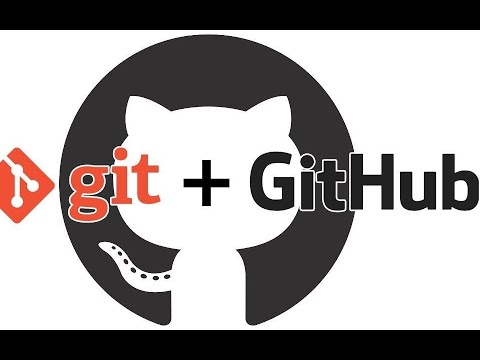
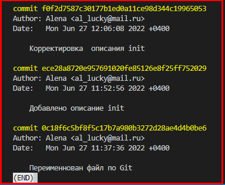
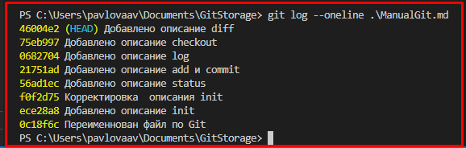
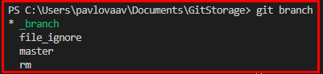

Git — это набор консольных утилит, которые отслеживают и фиксируют изменения в файлах (чаще всего речь
идет об исходном коде программ, но можно использовать его для любых файлов).
Для освоения можно воспользоваться:
- интерактивным учебником по Git, который создан, чтобы помочь новичкам постичь работу с git.
или
- краткой инструкцией по основным командам, представленной ниже.
Содержание
- init
- status
- add и commit
- log
- checkout
- diff
- gitignore
- rm
- branch
- merge
1. git init — создание репозитория
Команда создает в директории пустой репозиторий в виде директории .git, где и будет в дальнейшем храниться вся
информация. Вводится:
||
git init
При первом использовании Git необходимо представиться. Для этого нужно ввести в терминале 2
команды:
git config --global user.name «Ваше имя английскими буквами»
git config --global user.email ваша почта@example.com
2. git status — состояние проекта
Она выводит информацию обо всех изменениях, внесенных в дерево директорий проекта по сравнению с последним
коммитом рабочей ветки; отдельно выводятся внесенные в индекс и неиндексированные файлы. Т.е. получает
информацию от git о его текущем состоянии. Вводится:
||
git status
3. git add и git commit — индексация изменений и создание коммита
-
- git add
- позволяет внести в индекс — временное хранилище — изменения, которые затем
войдут в коммит
- ||
git add .\file_name
- добавляет указанный файл
- ||
git add .
- добавляет все файлы репозитория
-
- git commit
- создание коммита. Если индекс не пустой, то на его основе будет совершен коммит.
- ||
git commit -m "text"
- создает коммит из командной строки
4. git log — информация о коммитах в целом
Bывод на экран истории всех коммитов с их хеш-кодами: информацию об истории коммитов; коммитах, изменивших
отдельный файл; коммитах за определенный отрезок времени и так далее. Вводится:
- ||
git log
- короткая справка по всем коммитам, коснувшимся активной в настоящий момент ветки (журнал)

Если коммитов много, то для просмотра используют пробел, стрелки или энтер. Для возврата к коммандной
строке,
необходимо нажать на клавиатуре "q".
- ||
git log --oneline
- компактный журнал: идентификатор и коммит

Для вывода дерева зависимостей для всех коммитов используется:
- ||
git log --graph
- компактный журнал: идентификатор и коммит
5. git checkout — переключение между ветками, извлечение файлов
Команда позволяет переключаться между коммитами веток, как между удаленными, так и между локальными
ветками.
Вводится:
- ||
git checkout <идентификатор_коммита>
- переключение на ветку
- ||
git checkout master
- возврат к активной ветке (актуальному состоянию и продолжение работы)
- ||
git checkout -b <имя_ветки>
- создание новой ветки и сразу же выполняется переключение на нее.
6. git diff — отличия между деревьями проекта, коммитами и т.д.
Команда определяет изменения между объектами в проекте - деревьями (файлов и
директорий):
- ||
git diff <идентификатор_коммита>
- изменения, не внесенные в индекс
- ||
git diff --cached
- изменения, внесенные в индекс
7. .gitignore - файл для отслеживания игнорируемых файлов
Игнорируемые файлы отслеживаются в специальном файле .gitignore, который регистрируется в
корневом
каталоге
репозитория. В Git нет специальной команды для указания игнорируемых файлов: вместо этого необходимо
вручную
отредактировать файл .gitignore, чтобы указать в нем новые файлы, которые должны быть
проигнорированы.
Файлы
.gitignore содержат шаблоны (имена файлов), которые сопоставляются с именами файлов в репозитории
для
определения необходимости игнорировать эти файлы.
8. git rm - удаление файла из рабочей копии и индекса / только из индекса
Основное назначение git rm — это удаление отслеживаемых файлов из раздела
проиндексированных
файлов. Кроме того,
с помощью git rm можно удалить файлы одновременно из раздела проиндексированных
файлов и
рабочего каталога.
Удалить с ее помощью файл только из рабочего каталога нельзя.
- ||
git rm <имя_файла>
- удаляет файл из рабочей копии и индекса. Можно указать один файл,
несколько файлов через пробел (file1 file2 file3) или шаблон подстановки (~./directory/*).
- ||
git rm --cashed <имя_файла>
- удаляет файл из индекса и перемещает его в категорию Неотслеживаемые
||
Что бы удалить потом файл из рабочего каталога, нужно воспользоваться командой rm
<имя_файла>
(без использования git)
9. git branch - работа с ветвлением
Ветка – это последовательность коммитов. Для начала работы с новой веткой нужно выполнить два действия:
- Создать ветку с помощью команды git branch
- Переключиться на свежесозданную ветку с помощью команды git checkout <имя_ветки>
- ||
git branch
- показывает список веток (* - текущая)

- ||
git branch <имя_ветки>
- cоздает новую ветку
- ||
git branch -d <имя_ветки>
- ветка будет удалена, но только в том случае, если она полностью
слита с одной из других веток. В противном случае, Git выдаст предупреждение, о том, что в ветке
есть
неслитые
изменения, и не даст ее удалить
- ||
git branch -D <имя_ветки>
- ветка будет удалена, игнорируя предупреждения Git. В отличие от
-d, ключ -D удалит ветку в любом случае, даже если в ней есть изменения, которые можно потерять
10. git merge - объединяет несколько последовательностей коммитов в общую историю
Команда выполняет слияние отдельных направлений разработки, созданных с помощью команды **git branch**, в единую
ветку. cлияние выполняется в текущую ветку, в то время как целевая ветка остается без изменений.
- ||
git merge <имя_ветки>
- объединяет несколько последовательностей коммитов в общую историю, где <название ветки> — название ветки,
которая будет объединена с принимающей
- ||
git branch <имя_ветки>
- cоздает новую ветку
- ||
git branch -d <имя_ветки>
- ветка будет удалена, но только в том случае, если она полностью
слита с одной из других веток. В противном случае, Git выдаст предупреждение, о том, что в ветке
есть
неслитые
изменения, и не даст ее удалить
- ||
git branch -D <имя_ветки>
- ветка будет удалена, игнорируя предупреждения Git. В отличие от
-d, ключ -D удалит ветку в любом случае, даже если в ней есть изменения, которые можно потерять